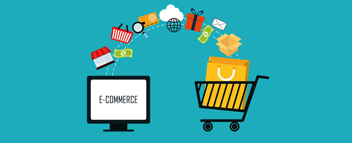

PROS AND CONS
There's no doubt that the ability to sell online has made many businesses viable and profitable. Like all business models, eCommerce has its advantages and disadvantages. It's important to get a good handle on the pros and cons so you can be informed when making your strategic decisions:

PROS
- A larger market
- Customer Insights Through Tracking And Analytics
- Fast Response To Consumer Trends And Market Demand
- More Opportunities To "Sell"
- lower cost
- Increased Sales With Instant Gratification
- Personalized messaging
- Ability to Scale Up (Or Down) Quickly And Unlimited "Shelf Space"
CONS
- Lack Of Personal Touch
- Lack Of Tactile Experience
- Price And Product Comparison
- Need For Internet Access
- Credit Card Fraud
- IT Security Issues
- Complexity In Taxation, Regulations, and Compliance
Back to ecommerce